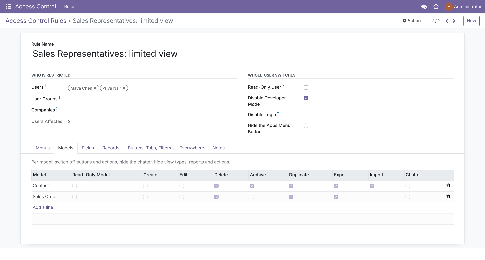
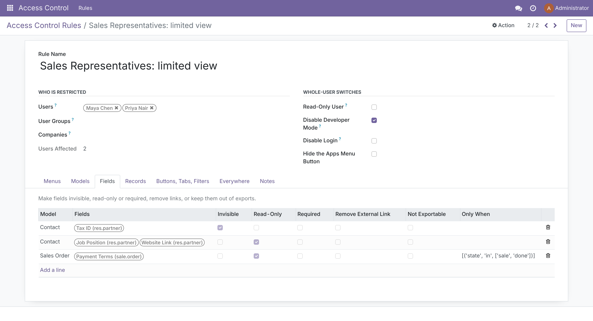
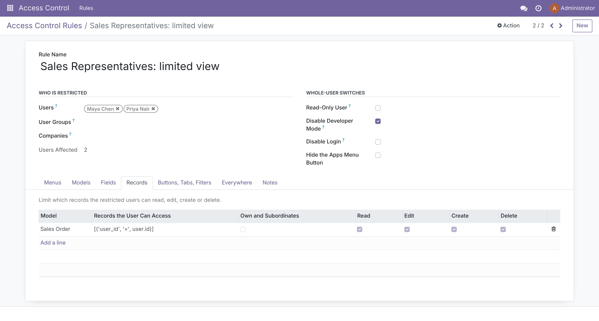
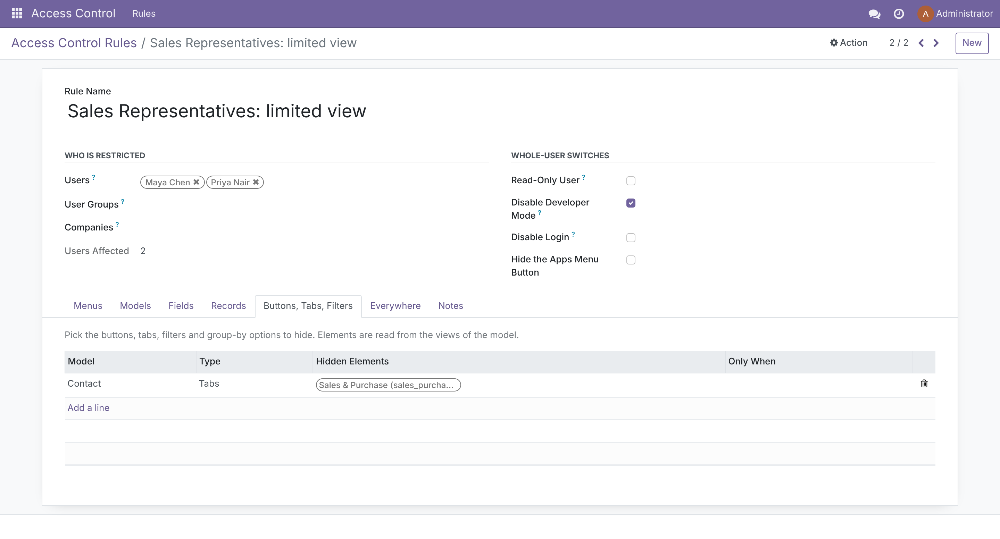
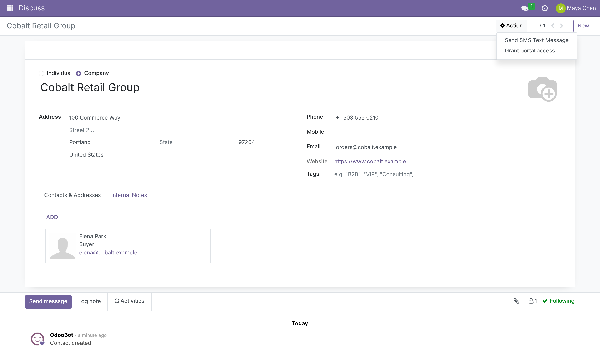
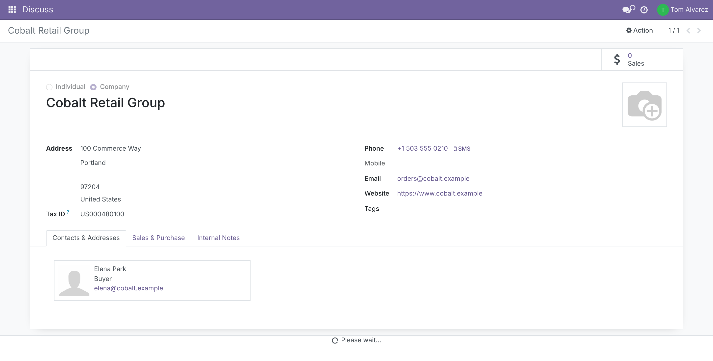

AXSync | Odoo 16.0 | Extra Tools
Decide what each person sees and does in Odoo. Block create, edit, delete and export, make users read-only, hide a single field or button, limit records, and switch off developer mode or a login.
Value in one line: it turns access requests that used to be developer tickets into a rule an administrator can set in minutes.
Odoo 16.0 Administration No extra Python libraries

A rule on Odoo 16.0, shown with demo data for fictional users and companies.
Odoo access rights work well for apps and big areas. They are harder to use for the small, daily requests: this salesperson must not see the tax number, this clerk must not export customers, this auditor may read everything and change nothing, this tab should not appear for interns.
User Access Control adds a rule screen for exactly these requests. An administrator chooses the users or groups, ticks what to hide or block, and the restriction is in place. The module adds restrictions on top of the standard access rights. It never grants access that Odoo does not already give.
A salesperson opens the cost price, a clerk opens the payroll menu, and nobody can say who changed what.
Odoo groups give a whole app or nothing. Hiding one field or one button means custom code.
Any user with export rights can download the full customer list in two clicks.
There is no simple way to let someone look at everything and change nothing.
Hiding a tab or making a field read-only waits for a developer and has to be repeated after each upgrade.
Disabling a login or switching off developer mode should take seconds, not a project.
| Problem | How the module addresses it |
|---|---|
| Users see too much | Hide menus, fields, tabs, buttons, filters and view types per user or group. |
| Coarse access rights | Fine settings per model, per field and per record filter on top of the standard groups. |
| Data leaves through export | Hide and refuse Export and Import, per model or everywhere, and mark single fields as not exportable. |
| Auditors and trainees | A Read-Only User switch that keeps Odoo usable for reading. |
| Developer tickets | Rules are set by an administrator in the interface, without code. |
| Offboarding | Disable the login or the developer mode from the same rule. |
Restrictions are placed on top of standard Odoo access rights and record rules, so they apply to every application, including your own modules.
One rule can target selected users, whole user groups, or both, and can be limited to some companies. Several rules can apply to the same user and their restrictions add up. A rule can be archived without losing its settings.
Pick the menus a user must not see. Everything below a hidden menu disappears with it, including the app on the home screen.
Switch off Create, Edit or Delete for a model. The buttons disappear and the server refuses the operation as well.
Remove these actions from the Action menu and the list toolbar of a model, or everywhere at once. Duplicate, archive, export and import are also refused on the server.
Hide the whole chatter, or only Send Message, Log Note or Schedule Activity, per model or everywhere. Posting by a restricted user is refused on the server. System tracking messages keep working.
Make a field invisible, read-only or required, remove the arrow to the linked record, remove Create or Create and Edit from a relational field, hide it in kanban cards or forbid its export.
A field rule or a button, tab or filter rule can apply only to records that match a condition, for example read-only once the order is confirmed.
Tick Also Enforce on the Server and a read-only field rejects writes and a required field rejects empty saves, also from imports and automation.
Add a domain that limits which records a user can read, edit, create or delete. Choose the operations separately. A soft restriction lets users read all records but change only theirs.
Fill the Reports To field on the user and let managers see the records of their team through a single option.
Read the views of a model, pick the elements to hide and they disappear for the restricted users. Add a condition to hide a button only in some states.
Remove kanban, pivot, graph, calendar or other view types from a model, and take reports and bound actions off the Print and Action menus. Printing a hidden report is refused.
One switch lets a user read everything they could before and change nothing. Odoo keeps working for them: they can still log in, browse and read Discuss.
Switch off developer mode for a user, or disable a login, which also ends the open session.
Remove the filter button, Add Custom Filter or Add Custom Group so users stay with the filters you prepared.
Members of the Access Control Manager group and the administrator are never restricted, so a rule can never lock out the people who manage it.
All screenshots come from the module running on Odoo 16.0 with demo data for fictional users and companies.





People see and export what their job needs, nothing more.
Read-only fields, hidden buttons and blocked deletes protect the records that matter.
An administrator adjusts a rule in minutes instead of waiting for a developer.
Read-only access for auditors and a clear list of rules per user.
Rules are data, not patched views, so they stay when you update applications.
Built on standard groups, views and record rules. No external services.
| Odoo version | 16.0 only. Separate builds exist for the other versions. |
|---|---|
| Required Odoo apps | Base, web and Discuss (mail). Works with any other application. |
| Python libraries | None beyond Odoo itself. |
| Multi-company | Supported. A rule can be limited to some companies. Covered by an automated test. |
| Testing | An automated test suite runs on Odoo 16.0, and the restrictions were also checked in the web client. |
| Data and services | No external services. Rules are stored in your database. |
No. Without a rule nobody is restricted. Members of the Access Control Manager group and the administrator are never restricted.
No. Hiding is for the screen. To protect data use the model switches, the Records tab, Read-Only User or Also Enforce on the Server.
An invisible field is hidden in the screens and blanked in the data the session receives. Read-Only and Required are screen settings unless Also Enforce on the Server is ticked.
Yes. They can log in, read records and use Discuss. They cannot create, edit or delete records. Technical records Odoo needs for a session, such as presence and saved filters, still work.
Yes. The restrictions add up. If one rule hides something, it stays hidden.
Yes, for any model and view. Use Reload Elements from Views to list the buttons, tabs and filters of a model after installing an application.
Yes. A rule can apply only while one of its companies is the current company of the user.
Yes. It works with Odoo 16.0 and is built on standard web client and ORM features.
It stops applying immediately. Its settings are kept.
Email hunain@axsync.com or use the Contact the Author option on this Odoo Apps Store page.
Published by AXSync
Website: www.axsync.com
Support email: hunain@axsync.com
Please include your Odoo version, the module version, and what you expected to see. Screenshots help.
This module is published by AXSync and is not an official Odoo product. Odoo is a trademark of Odoo S.A.
Install AXSync User Access Control and manage restrictions from one screen.
www.axsync.com